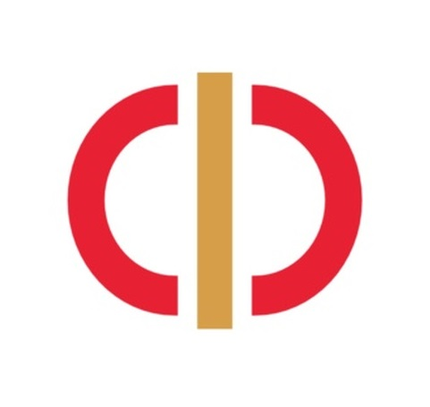

Проведён всесторонний анализ текущей ситуации, включающий исследование конкурентов, аудит существующих сайтов и базы данных, изучение целевой аудитории и технических требований
Разработана полная проектная документация, включая устав, паспорт, пояснительную записку, дорожную карту с диаграммой Ганта и матрицу ответственности RACI, что создало основу для чёткого управления проектом и распределения задач между участниками команды
Созданы прототипы интерфейса веб-платформы, включающие главную страницу, личный кабинет участника, страницу достижений, формы авторизации и регистрации, систему уведомлений, а также административную панель с дашбордом ключевых показателей и аналитическими модулями
Реализована техническая часть платформы: спроектирована и создана база данных для хранения информации об участниках, заявках, достижениях и документах, разработана функциональная админ-панель с модулями образовательной статистики, географической аналитики и управления заявками, выполнена интеграция фронтенда с бэкендом и проведено комплексное тестирование всех функций
Сформирована база потенциальных партнёров и спонсоров, включающая более 50 организаций из сфер образования, финансов и медиа, с полной контактной информацией и аналитическими заметками, а также подготовлен полный комплект коммуникационных материалов: медиакит, шаблоны писем для разных категорий партнёров и варианты коммерческих предложений
Созданы и настроены каналы коммуникации с аудиторией: Telegram-канал и сообщество ВКонтакте, разработан рубрикатор и контент-план на длительный период, обеспечено регулярное ведение социальных сетей с публикацией образовательных, информационных и вовлекающих материалов
Таким образом, проект полностью достиг поставленных целей: создана работающая веб-платформа, объединяющая все проекты Финатлона, обеспечено регулярное присутствие проекта в социальных сетях и сформирована основа для дальнейшего привлечения партнёрских ресурсов. Разработанные продукты и материалы могут быть использованы для полноценного запуска платформы, начала активной работы с партнёрами и дальнейшего масштабирования проекта с целью повышения доступности и привлекательности олимпиад по финансовой грамотности для школьников и студентов